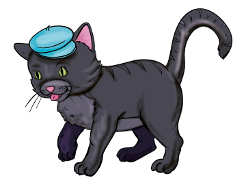
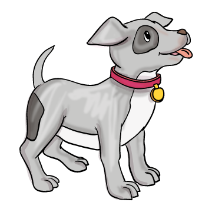

Kutya-macska barátság

Réges-régen a kutyák lakomát csaptak. Bodri megfőzte a sok csontot, aztán behívta Cirmost meg-kós-tol-ni a fi-nom-sá-go-kat. A macska meg-kós-tol-ta, de nem ízlett neki tejföl nélkül. Kereste a kutya a tejfölt, de nem volt a háznál. Hamar menjen valaki a boltba! De ki menjen? Megkérte hát a macskát.
Szaladt a macska a boltba, megvette a tejfölet. Vitte szépen ha-za-fe-lé, de éhes volt, gondolta, meg-kós-tol-ja.

Addig-addig kós-tol-gat-ta, míg a bögre kiürült. Kitalált min-den-fé-le ha-zug-sá-got, de a kutya ész-re-vet-te a macska tejfeles bajuszát. Elkezdte kergetni a macskát, de az felszaladt a közeli fára, és onnan miákolt a kutyára.
Azóta nem nézhet a kutya a macskára.